Operating Documentation
Direction 5193574-800, Rev# 22
LightSpeed 7.X Service Methods
Module Version 2.0, Version Date 12/17/13
Operating Documentation |
| Required Persons | Preliminary Reqs | Procedure | Finalization |
|---|---|---|---|
| 1 | 30 mins |
When a hard disk drive, which was previously used in a RAID volume, is reused as system or image disk, clearing the configuration information in the hard disk drive is required.
If an uncleared disk is used as system disk, OS load will be failed with the following error.
Illustration 1: Error Message during OS Load
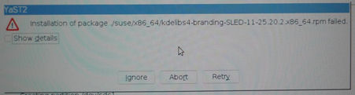
If an uncleared disk is used as image disk, Application load will be failed with the following error.
Illustration 2: Error Message during Application Load
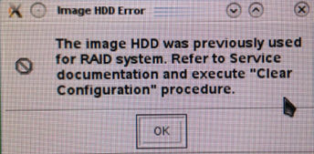
| NOTE: | On VCT FREEdom (13HW31.8), error message during Application load will not appear. Thus check if /usr/g/sdc_image_pool/ directory exists by df command after OS loading. The Illustration 3 shows failure case (missing /usr/g/sdc_image_pool/ directory). |
Illustration 3: df Command Output
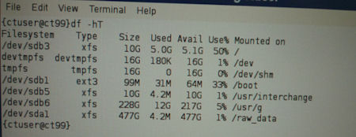
| Last Revised: | December 17, 2013 |
| Condition | Reference | Effectivity |
|---|---|---|
Only trained service personnel should service the GE CT Scanner. | - | - |
| NOTE: | The disk configuration clearing needs to be performed by RAID control card WebBIOS utility. |
Replace the System or Image Hard Disk Drive that you want to clear the configuration with one of the Scan Data Disk.
Shut down the system and recycle the console power.
Press [F10] when HP logo is displayed.
In Hewlett-Packard Setup Utility, select Advanced → Slot Setting.
Illustration 4: Hewlett-Packard Setup Utility
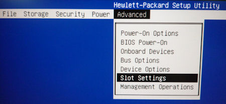
In the Slot Settings menu, change the Slot 4 setting to Enabled. And hit F10 key to accept the change.
| NOTE: | Do not change the slot 2 setting. |
Illustration 5: Slot Settings Menu
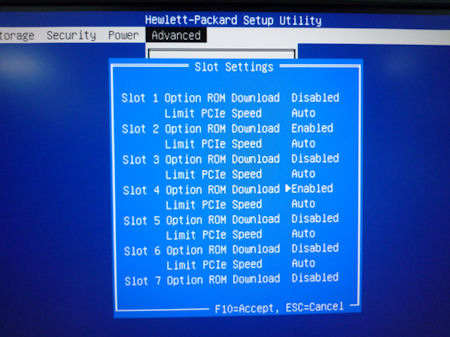
Select File → Save Changes and Exit to exit Hewlett-Packard Setup Utility.
Illustration 6: Menu of Hewlett-Packard Setup Utility
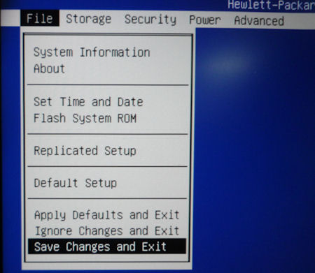
When HP logo is displayed, hit Enter key.
Illustration 7: HP Logo
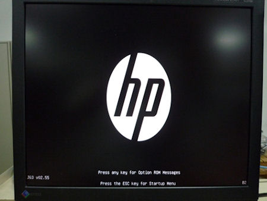
When the following RAID information is displayed, press CTL+H.
Illustration 8: RAID Information
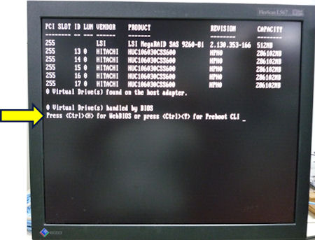
Click “Start” in Adapter Selection screen.
Illustration 9: Adapter Selection screen
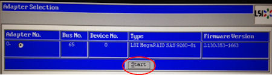
Click “Clear” in the next screen.
Illustration 10: Clear Foreign Config
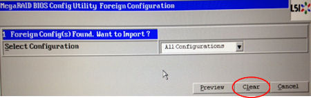
Click “Yes” in the next screen.
Illustration 11: Confirm Page
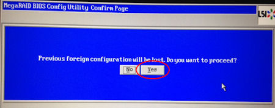
The WebBIOS screen will be displayed as follows.
Illustration 12: WebBIOS Screen
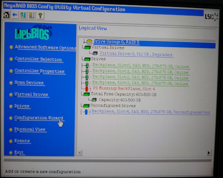
Click Configuration Wizard from left side menu.
In the Configuration Wizard menu, select Clear Configuration.
Illustration 13: Configuration Wizard
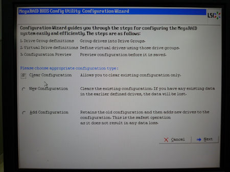
In the next screen select Yes.
Illustration 14: Configuration Wizard - Confirm Page
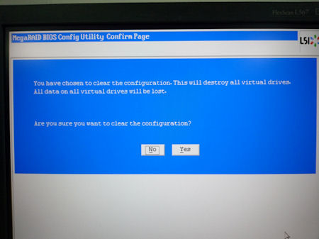
Confirm all Scan Data disk shows Unconfigured Good in Physical View screen.
Illustration 15: Physical View
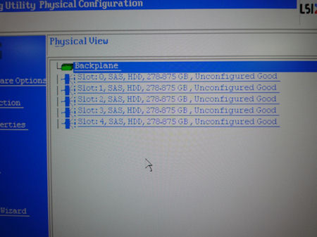
Click “Exit” from the menu and select Yes in the next screen.
Illustration 16: Exit Application
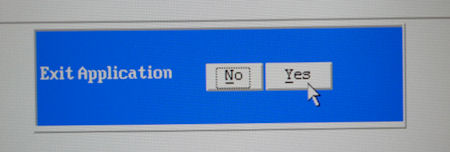
Reboot the system by pressing CTL+ALT+DEL keys.
Replace the disk in Scan Data Disk Slot 4 back to the original location (System or Image Disk slot).
Restore the Host BIOS setting to default. (Advanced → slot settings → slot 4 option ROM Download : Disabled)
| NOTE: | Do not change the slot 2 setting. |
Illustration 17: Slot Settings Menu
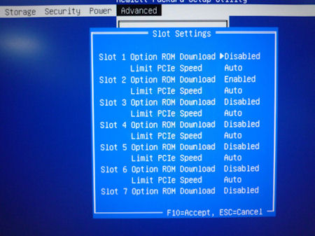
Replace the hard disk drives to the original location.